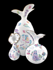

|  | 作品名稱 | 臺灣動物的魔法之旅 A Magical Journey of Taiwanese Animals |
| 作者 | 傑作陶藝 Excellence Collection Ceramics Co. | |
| 年代 | 2020 | |
| 尺寸 | ||
| 作品說明 | 作品把握文化性與創意性兼具之原則，在造型上跳脫荷口、長頸等傳統器形之限制，改用代表臺灣之抽象化蝴蝶與蘭花為器型之主角。圖案部分則由日本插畫家Econeco以臺灣黑熊、獼猴、石虎、藍鵲為創作主要素材，並融入Econeco獨創的多種虛構角色。有別於傳統彩繪陶瓷多以吉祥概念之訴求，企圖以療癒性的風格作品，滿足現代社會對舒壓的需求。。 |